Selected Builds
A collection of programming projects I've developed across different stages of my academic and professional journey. They range from traffic simulation and machine learning to automation tools and data processing, each built to solve a specific problem or explore a particular idea.
A note on Github: Please excuse the state of the repositories. Not everything is uploaded yet, and what is up there is pretty raw. I'll get around to cleaning everything up eventually and uploading the rest of it when life gives me some breathing room.
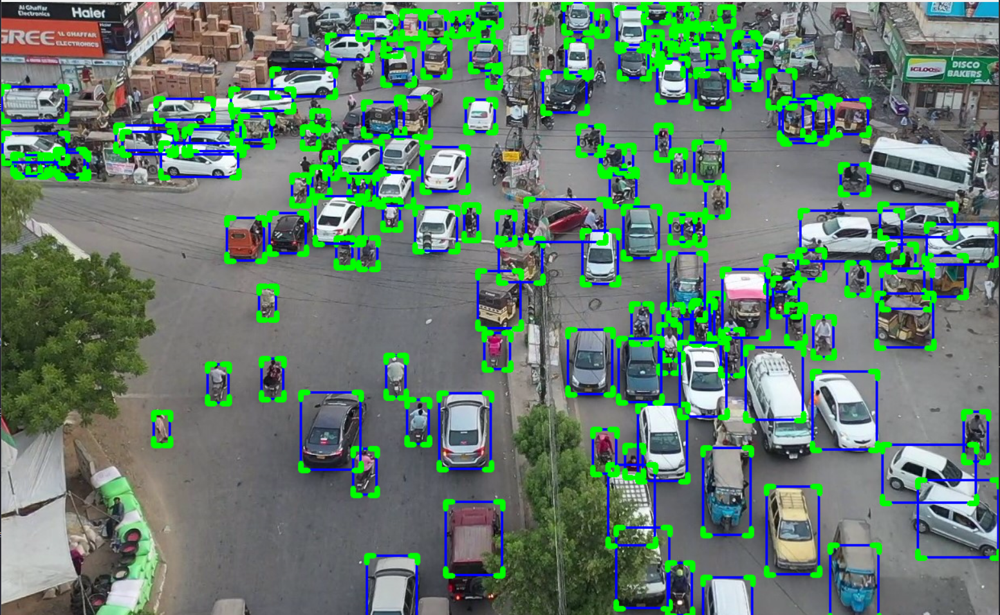
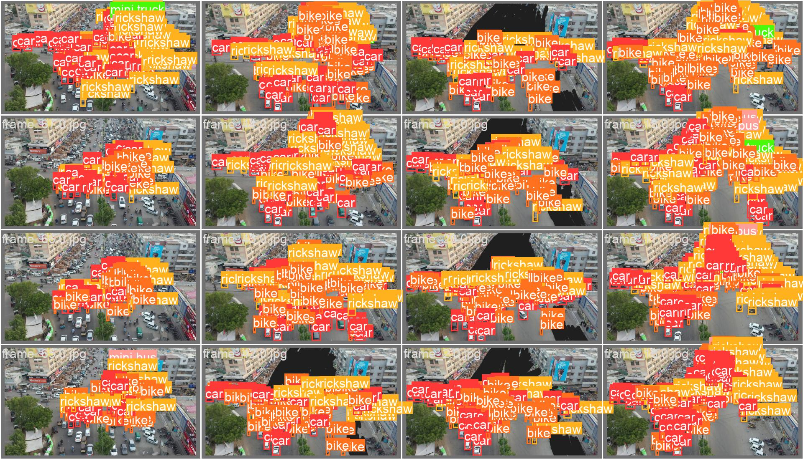
Vehicle Detection & Counting
An image processing pipeline that detects and classifies vehicles in traffic footage and keeps a running count as they pass through the frame.
How it's done: built with a YOLO-based detector for frame-by-frame vehicle detection, with a counting line to tally vehicles as they cross a reference point. Tuned specifically for undisciplined traffic conditions as visible in the image.
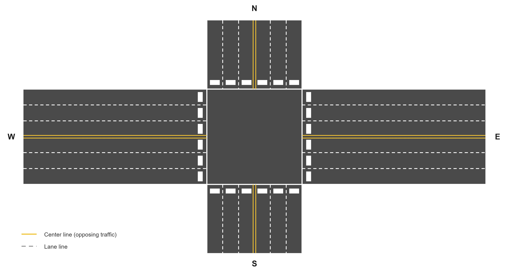
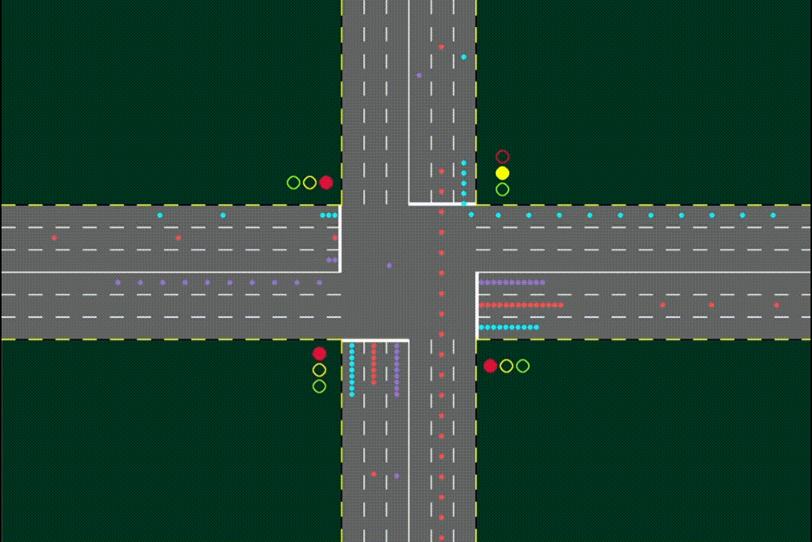
Traffic Intersection Simulation
A 2D simulation of a traffic intersection built in Pygame, used to visualise vehicle flow and signal behaviour.
How it's done: vehicles, lanes and signal phases are modelled as objects updated on a game loop, with spawn rates, movement rules, and signal logic driving how traffic behaves through the intersection. It's built to test fixed, semi-adaptive, and fully adaptive signal control side by side, under identical traffic conditions.
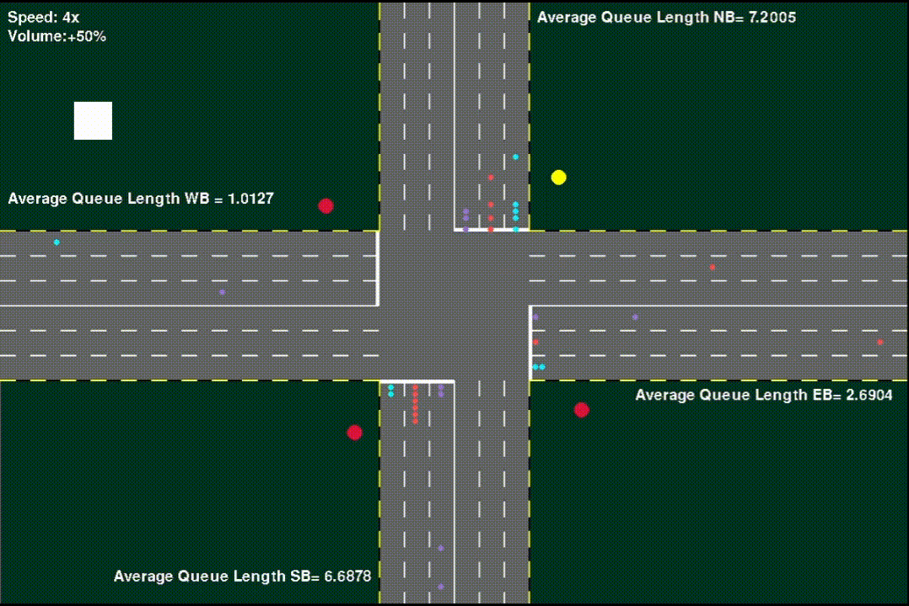
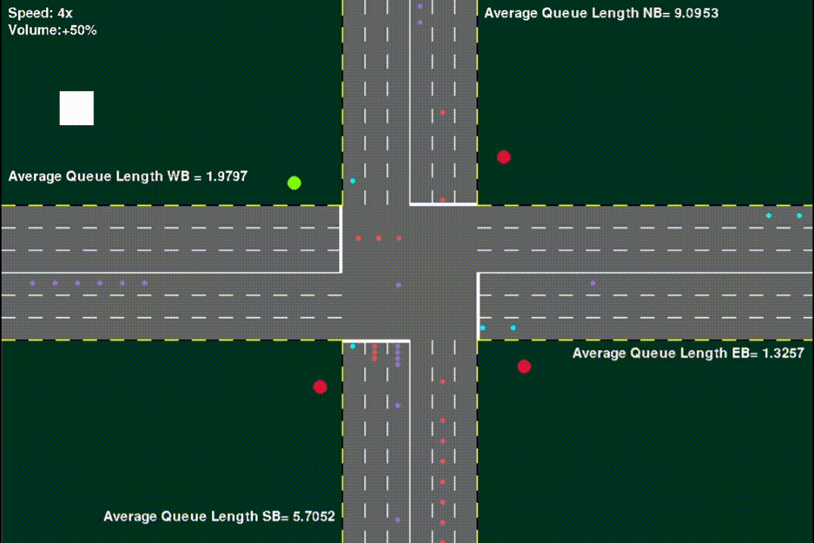
Real-Time Signal Optimization
A scheduling algorithm that optimises real-time traffic signal timing using NEAT (NeuroEvolution of Augmenting Topologies).
How it's done: signal timing strategies are evolved with python-neat, with a fitness function scoring each candidate on queue length across simulated scenarios, evolving better-performing signal timing networks over successive generations. Tested against a fixed-time baseline, later generations showed measurably shorter queues and reduced average delay. See the videos alongside this section for a side-by-side look, showing the improvement across generations.
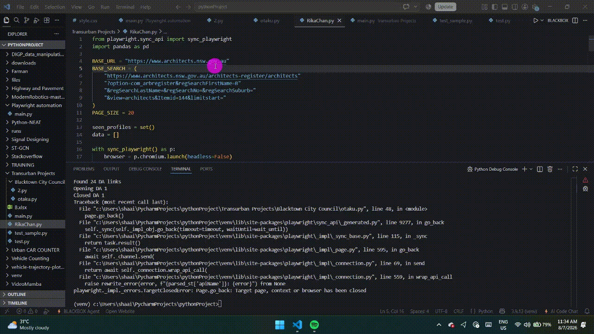
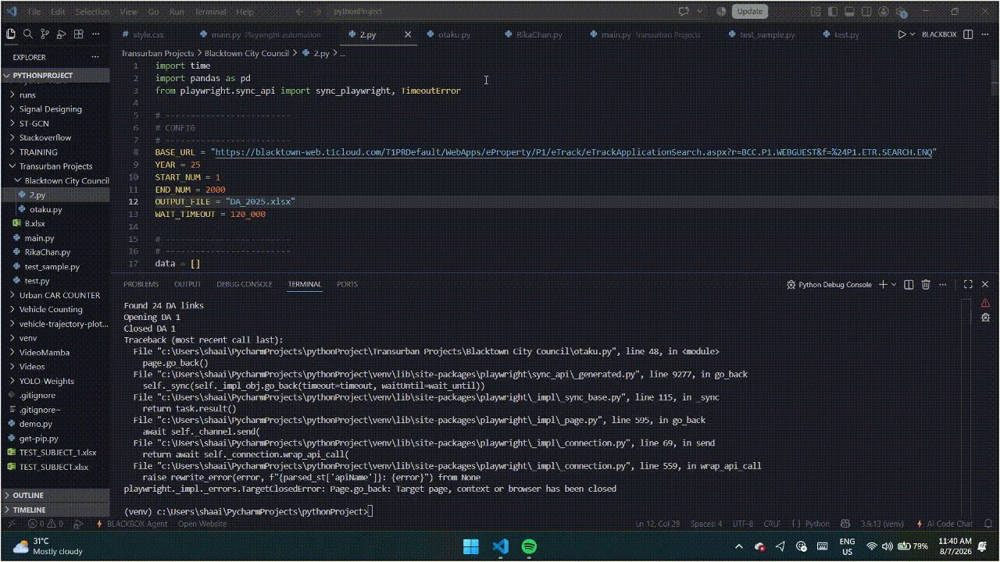
Web Scraping Toolkit
A collection of scripts for pulling structured data from websites, used both personally and at my previous job to speed up otherwise tedious manual tasks.
How it's done: built using a mix of GUI automation and Playwright, depending on the site and what it needed. The videos alongside show two examples: one pulls architects' info from a website and logs it into Excel, the other scans a council website for relevant documents like SEE reports or architectural plans.
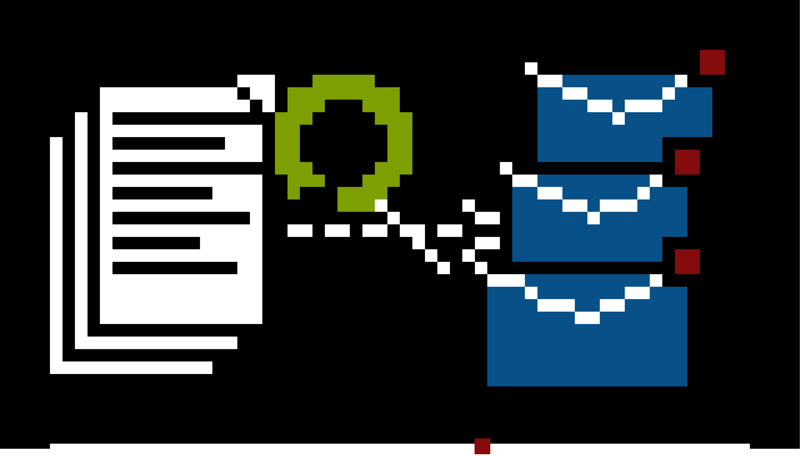
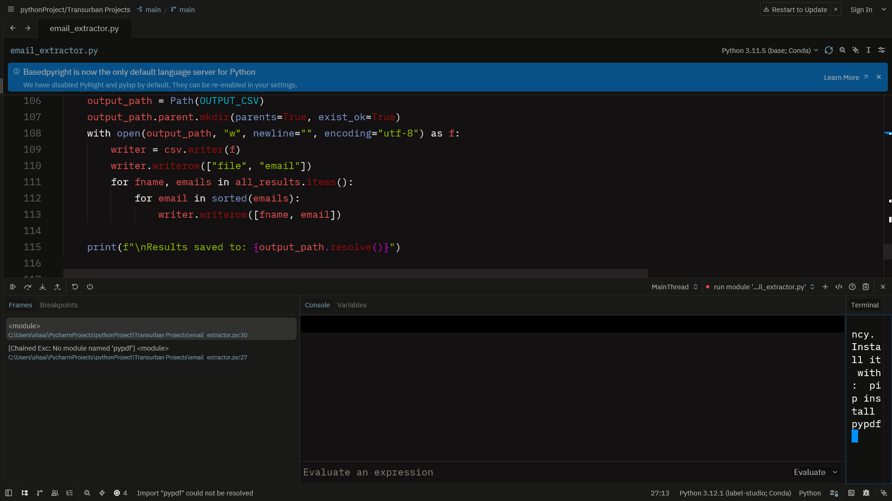
Email Extraction from PDFs
A tool that scans PDF documents and pulls out email addresses automatically, saving the manual work of reading through each file by hand.
How it's done: extracts text from PDFs with PyPDF2 and matches email addresses using a regex pattern, exporting the results to a spreadsheet with pandas.
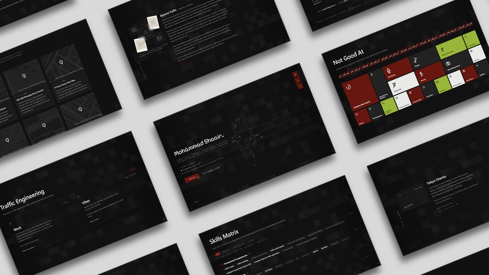
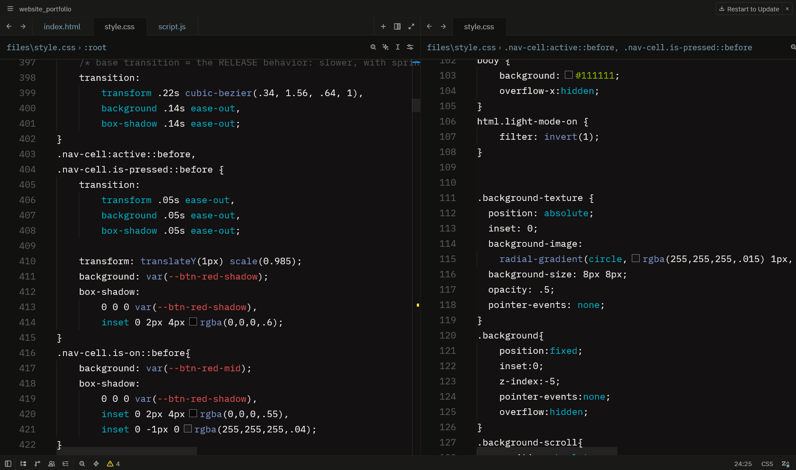
This Website
The site you're looking at right now. Designed and developed from scratch to document my work, projects, interests, and the ongoing journey of becoming the engineer I aspire to be.
How it's done: built with plain HTML, CSS, and JavaScript, no frameworks, so every page stays lightweight, fast, and easy to edit by hand. Every part of the website, from the layout and animations to the interactions, was designed and developed from scratch, adding up to 9,000+ lines of code.
If you want to see the code for a specific project, or have any questions about it, feel free to reach out to me directly via email or LinkedIn. I'd be happy to share the code and discuss the project with you.